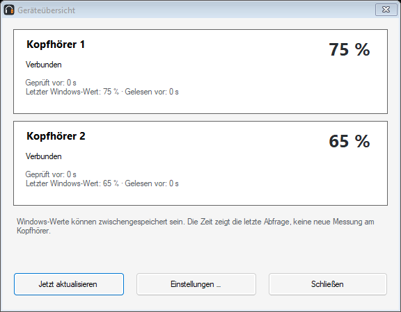
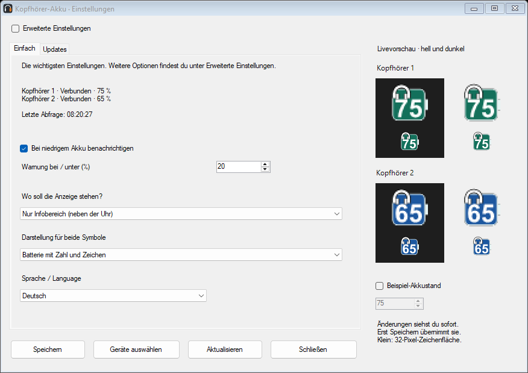

WINDOWS 10 / 11 · KOSTENLOS · OPEN SOURCE
Deine Kopfhörer.
Den Akku im Blick.
Der Akkustand von bis zu zwei Bluetooth-Kopfhörern direkt neben der Uhr oder als frei platzierbares Desktop-Widget. Ein kleines Tool von Aldikiller.
Installer und portable ZIP · Deutsch, English, Español, Français und Українська · Keine Werbung oder Telemetrie Das Desktop-Widget lässt sich in Größe, Farben, Schrift und Transparenz anpassen.
Das Desktop-Widget lässt sich in Größe, Farben, Schrift und Transparenz anpassen.In 35 Sekunden ansehen
Bilderdemo mit echten Ansichten aus Version 1.4.0: Geräteübersicht, einfache Einstellungen, Gestaltung und Widget. Beispieldaten, keine Live-Messung. Ohne Ton.
Video herunterladen (MP4)

Geräteübersicht
Einfache EinstellungenSo, wie du es magst
Eigene Namen, Farben, Symbole und Schriften. Batterieform und Anzeige lassen sich mit Livevorschau einstellen.
Rechtzeitig Bescheid
Akkuwarnungen, optionaler Autostart und eine freiwillige Suche nach Updates. Keine automatische Installation von Updates.
Einfach anfangen
Installieren oder ZIP entpacken, Kopfhörer verbinden und im Tool auswählen. Die bebilderte Anleitung hilft weiter.
Vor dem Download
Benötigt Windows 10 ab Build 19041 oder Windows 11, jeweils x64, und .NET Framework 4.8. Angezeigt werden nur Akkuwerte, die Windows und der Treiber liefern. Bisher getestet: JBL Live 770NC und JLab Rewind 2. Andere Modelle sind noch nicht bestätigt.
Die Downloads sind derzeit unsigniert. Windows kann einen Warnhinweis anzeigen. Hilfe gibt es im Wiki. Fehler bitte über Issues melden.
Neu in 1.4.0
Ein Klick auf ein Akkusymbol im Infobereich öffnet die Übersicht beider Kopfhörer. Ein Doppelklick öffnet die Einstellungen. Jedes Gerät hat eine eigene Abfragezeit. Frühere Werte werden bei einer Trennung als nicht aktuell angezeigt. Nach Standby, Entsperren und Bluetooth-Verbindungsänderungen fragt die App mehrfach nach. Windows kann Akkuwerte zwischenspeichern: Die Zeit bezeichnet die letzte Windows-Abfrage, keine bestätigte neue Messung am Kopfhörer.